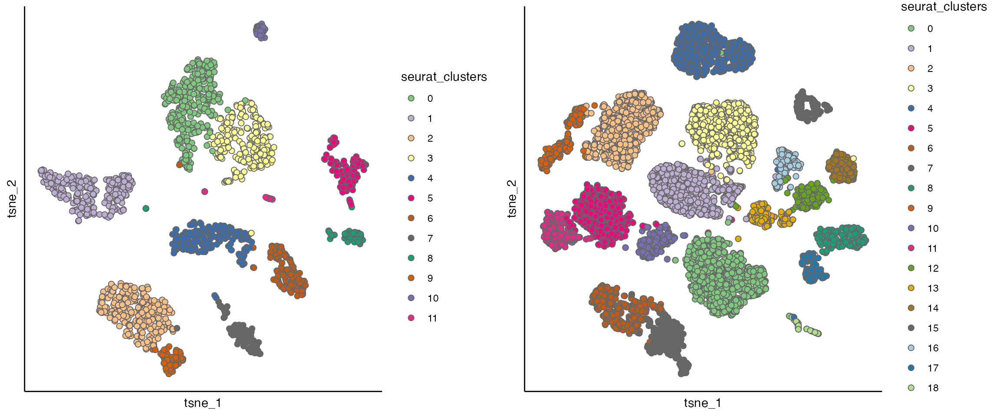
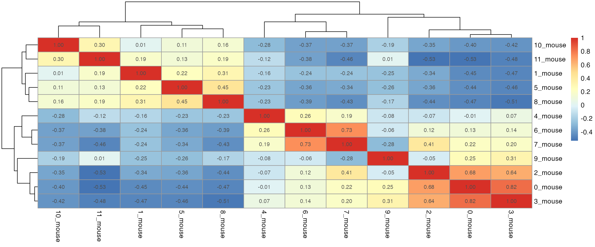
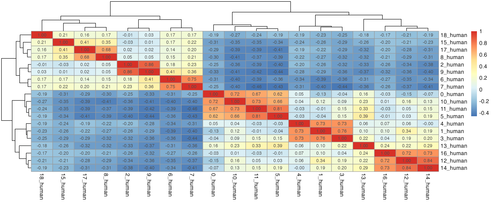
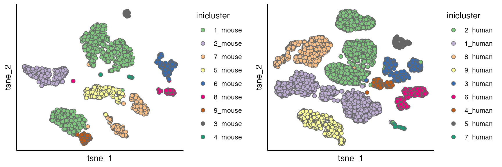
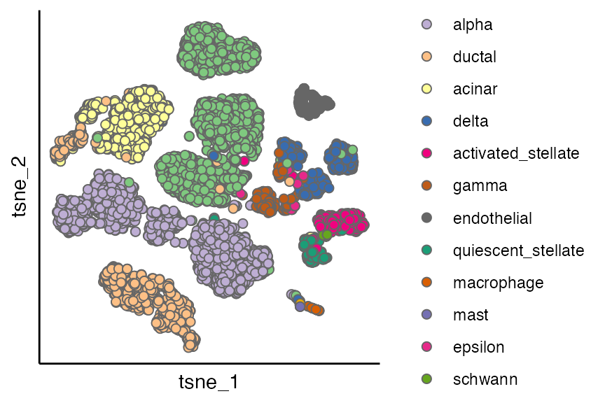
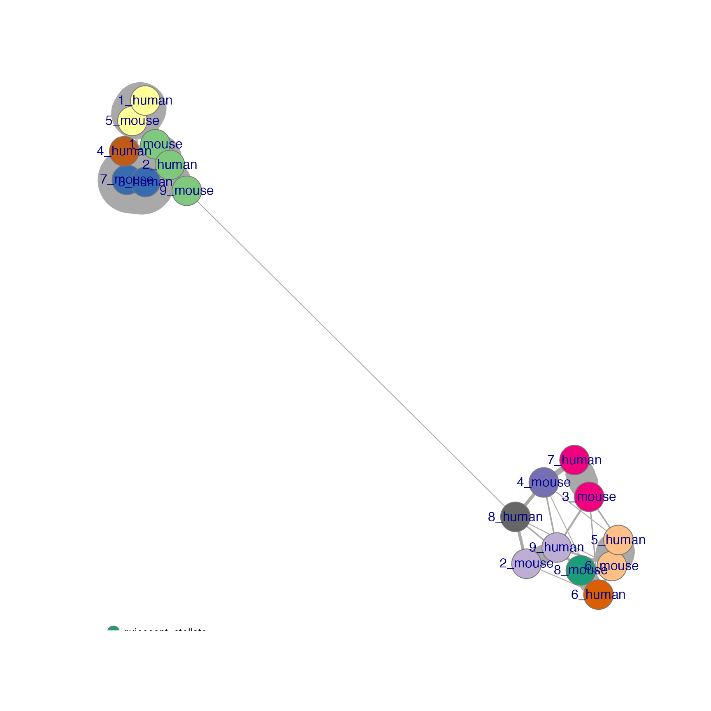
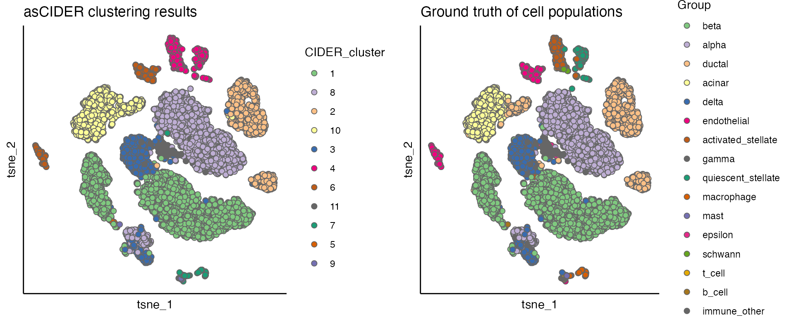

Detailed walk-through of de novo CIDER (dnCIDER) on pancreas data
Source:vignettes/dnCIDER.Rmd
dnCIDER.RmdIntroduction
This vignette performs dnCIDER on a cross-species pancreas dataset. It is aimed to show the underneath structure of dnCIDER compared to the other high level vignette.
Set up
In addition to CIDER, we will load the following packages:
library(CIDER)
library(Seurat)
#> Loading required package: SeuratObject
#> Loading required package: sp
#> 'SeuratObject' was built under R 4.4.0 but the current version is
#> 4.4.1; it is recomended that you reinstall 'SeuratObject' as the ABI
#> for R may have changed
#>
#> Attaching package: 'SeuratObject'
#> The following objects are masked from 'package:base':
#>
#> intersect, t
library(parallel)
library(cowplot)Load example data
The example data can be downloaded from https://figshare.com/s/d5474749ca8c711cc205.
Pancreatic cell data contain cells from human (8241 cells) and mouse (1886 cells).
load("../data/pancreas_counts.RData") # count matrix
load("../data/pancreas_meta.RData") # meta data/cell information
seu <- CreateSeuratObject(counts = pancreas_counts, meta.data = pancreas_meta)
table(seu$Batch)
#>
#> human mouse
#> 8241 1886Perform initial clustering
seu_list <- Seurat::SplitObject(seu, split.by = "Batch")
seu_list <- mclapply(seu_list, function(x) {
x <- NormalizeData(x, normalization.method = "LogNormalize",
scale.factor = 10000, verbose = FALSE)
x <- FindVariableFeatures(x, selection.method = "vst",
nfeatures = 2000, verbose = FALSE)
x <- ScaleData(x, verbose = FALSE, vars.to.regress = "Sample")
x <- RunPCA(x, features = VariableFeatures(object = x), verbose = FALSE)
x <- FindNeighbors(x, dims = 1:15, verbose = FALSE)
x <- FindClusters(x, resolution = 0.6, verbose = FALSE)
return(x)
})| 0 | 1 | 2 | 3 | 4 | 5 | 6 | 7 | 8 | 9 | 10 | 11 | 12 | 13 | 14 | 15 | 16 | 17 | 18 | |
|---|---|---|---|---|---|---|---|---|---|---|---|---|---|---|---|---|---|---|---|
| acinar | 0 | 0 | 823 | 0 | 0 | 0 | 1 | 1 | 2 | 102 | 0 | 0 | 0 | 0 | 0 | 0 | 0 | 3 | 0 |
| activated_stellate | 0 | 0 | 0 | 1 | 0 | 0 | 0 | 0 | 269 | 0 | 0 | 0 | 0 | 0 | 0 | 0 | 1 | 4 | 0 |
| alpha | 1067 | 3 | 0 | 0 | 0 | 665 | 0 | 0 | 0 | 0 | 251 | 243 | 1 | 6 | 0 | 0 | 1 | 0 | 4 |
| b_cell | 0 | 0 | 0 | 0 | 0 | 0 | 0 | 0 | 0 | 0 | 0 | 0 | 0 | 0 | 0 | 0 | 0 | 0 | 0 |
| beta | 1 | 886 | 2 | 812 | 740 | 1 | 0 | 0 | 0 | 0 | 2 | 0 | 3 | 2 | 1 | 0 | 4 | 0 | 1 |
| delta | 0 | 3 | 2 | 1 | 3 | 0 | 0 | 0 | 0 | 0 | 1 | 0 | 215 | 1 | 216 | 0 | 148 | 0 | 2 |
| ductal | 1 | 1 | 6 | 0 | 0 | 0 | 469 | 386 | 0 | 169 | 0 | 0 | 1 | 0 | 0 | 0 | 0 | 0 | 0 |
| endothelial | 0 | 0 | 0 | 0 | 0 | 0 | 0 | 0 | 1 | 0 | 0 | 0 | 0 | 0 | 0 | 212 | 0 | 1 | 0 |
| epsilon | 0 | 0 | 0 | 0 | 0 | 0 | 0 | 0 | 0 | 0 | 0 | 0 | 8 | 8 | 0 | 0 | 1 | 0 | 0 |
| gamma | 1 | 1 | 0 | 0 | 0 | 0 | 0 | 0 | 0 | 0 | 1 | 0 | 3 | 210 | 0 | 0 | 25 | 0 | 0 |
| immune_other | 0 | 0 | 0 | 0 | 0 | 0 | 0 | 0 | 0 | 0 | 0 | 0 | 0 | 0 | 0 | 0 | 0 | 0 | 0 |
| macrophage | 0 | 0 | 0 | 0 | 0 | 0 | 0 | 0 | 0 | 0 | 0 | 0 | 0 | 0 | 0 | 0 | 0 | 0 | 39 |
| mast | 0 | 0 | 0 | 0 | 0 | 0 | 0 | 0 | 0 | 0 | 0 | 0 | 0 | 0 | 0 | 0 | 0 | 0 | 25 |
| quiescent_stellate | 1 | 0 | 0 | 1 | 0 | 0 | 1 | 0 | 4 | 0 | 0 | 0 | 0 | 0 | 0 | 0 | 0 | 153 | 0 |
| schwann | 0 | 0 | 0 | 0 | 0 | 0 | 0 | 0 | 10 | 0 | 0 | 0 | 0 | 0 | 0 | 0 | 0 | 0 | 0 |
| t_cell | 0 | 0 | 0 | 0 | 0 | 0 | 0 | 0 | 0 | 0 | 0 | 0 | 0 | 0 | 0 | 0 | 0 | 0 | 7 |
seu_list <- mclapply(seu_list, RunTSNE, dims = 1:15)
p1 <- scatterPlot(seu_list[[1]], "tsne", colour.by = "seurat_clusters")
p2 <- scatterPlot(seu_list[[2]], "tsne", colour.by = "seurat_clusters")
cowplot::plot_grid(p1,p2)
dist_coef <- getDistMat(seu_list, downsampling.size = 50)
#> | | | 0% | |=================================== | 50% | |======================================================================| 100%
par(mfrow = c(length(seu_list),1))
for(i in which(sapply(dist_coef, function(x) return(!is.null(x))))){
tmp <- dist_coef[[i]] + t(dist_coef[[i]])
diag(tmp) <- 1
pheatmap::pheatmap(tmp, display_numbers = TRUE)
}
for(seu_itor in 1:2){
tmp <- dist_coef[[seu_itor]] + t(dist_coef[[seu_itor]])
diag(tmp) <- 1
tmp <- 1 - tmp
hc <- hclust(as.dist(tmp), method = "average")
hres <- cutree(hc, h = 0.4)
df_hres <- data.frame(hres)
df_hres$hres <- paste0(df_hres$hres, "_", unique(seu_list[[seu_itor]]$Batch))
seu_list[[seu_itor]]$inicluster_tmp <- paste0(seu_list[[seu_itor]]$seurat_clusters, "_", seu_list[[seu_itor]]$Batch)
seu_list[[seu_itor]]$inicluster <- df_hres$hres[match(seu_list[[seu_itor]]$inicluster_tmp,rownames(df_hres))]
}
# plot(as.dendrogram(hc), horiz = T)
p1 <- scatterPlot(seu_list[[1]], "tsne", "inicluster")
p2 <- scatterPlot(seu_list[[2]], "tsne", "inicluster")
plot_grid(p1,p2)
scatterPlot(seu_list[[2]], "tsne", "Group")
Calculate of IDER similarity matrix
res <- unlist(lapply(seu_list, function(x) return(x$inicluster)))
res_names <- unlist(lapply(seu_list, function(x) return(colnames(x))))
seu@meta.data$initial_cluster <- res[match(colnames(seu), res_names)]
ider <- getIDEr(seu,
group.by.var = "initial_cluster",
batch.by.var = "Batch",
downsampling.size = 35,
use.parallel = FALSE, verbose = FALSE)
net <- plotNetwork(seu, ider, colour.by = "Group" , vertex.size = 0.6, weight.factor = 5)
hc <- hclust(as.dist(1-(ider[[1]] + t(ider[[1]])))/2)
plot(as.dendrogram(hc)) #, horiz = TRUEPerform final Clustering
seu <- finalClustering(seu, ider, cutree.h = 0.35) # final clustering
seu <- NormalizeData(seu, verbose = FALSE)
seu <- FindVariableFeatures(seu, selection.method = "vst",
nfeatures = 2000, verbose = FALSE)
seu <- ScaleData(seu, verbose = FALSE)
seu <- RunPCA(seu, npcs = 20, verbose = FALSE)
seu <- RunTSNE(seu, reduction = "pca", dims = 1:12)
plot_list <- list()
plot_list[[1]] <- scatterPlot(seu, "tsne", colour.by = "CIDER_cluster", title = "asCIDER clustering results")
plot_list[[2]] <- scatterPlot(seu, "tsne", colour.by = "Group", title = "Ground truth of cell populations")
plot_grid(plotlist = plot_list, ncol = 2)
Reproducibility
sessionInfo()
#> R version 4.4.1 (2024-06-14)
#> Platform: x86_64-apple-darwin20
#> Running under: macOS Monterey 12.5.1
#>
#> Matrix products: default
#> BLAS: /Library/Frameworks/R.framework/Versions/4.4-x86_64/Resources/lib/libRblas.0.dylib
#> LAPACK: /Library/Frameworks/R.framework/Versions/4.4-x86_64/Resources/lib/libRlapack.dylib; LAPACK version 3.12.0
#>
#> locale:
#> [1] en_US.UTF-8/en_US.UTF-8/en_US.UTF-8/C/en_US.UTF-8/en_US.UTF-8
#>
#> time zone: Europe/London
#> tzcode source: internal
#>
#> attached base packages:
#> [1] parallel stats graphics grDevices utils datasets methods
#> [8] base
#>
#> other attached packages:
#> [1] cowplot_1.1.3 Seurat_5.1.0 SeuratObject_5.0.2 sp_2.1-4
#> [5] CIDER_0.99.2
#>
#> loaded via a namespace (and not attached):
#> [1] RColorBrewer_1.1-3 rstudioapi_0.16.0 jsonlite_1.8.8
#> [4] magrittr_2.0.3 spatstat.utils_3.1-0 farver_2.1.2
#> [7] rmarkdown_2.27 fs_1.6.4 ragg_1.3.2
#> [10] vctrs_0.6.5 ROCR_1.0-11 spatstat.explore_3.3-2
#> [13] htmltools_0.5.8.1 sass_0.4.9 sctransform_0.4.1
#> [16] parallelly_1.38.0 KernSmooth_2.23-24 bslib_0.7.0
#> [19] htmlwidgets_1.6.4 desc_1.4.3 ica_1.0-3
#> [22] plyr_1.8.9 plotly_4.10.4 zoo_1.8-12
#> [25] cachem_1.1.0 igraph_2.0.3 mime_0.12
#> [28] lifecycle_1.0.4 iterators_1.0.14 pkgconfig_2.0.3
#> [31] Matrix_1.7-0 R6_2.5.1 fastmap_1.2.0
#> [34] fitdistrplus_1.2-1 future_1.34.0 shiny_1.9.1
#> [37] digest_0.6.37 colorspace_2.1-1 patchwork_1.2.0
#> [40] tensor_1.5 RSpectra_0.16-2 irlba_2.3.5.1
#> [43] textshaping_0.4.0 labeling_0.4.3 progressr_0.14.0
#> [46] fansi_1.0.6 spatstat.sparse_3.1-0 httr_1.4.7
#> [49] polyclip_1.10-7 abind_1.4-5 compiler_4.4.1
#> [52] withr_3.0.1 doParallel_1.0.17 viridis_0.6.5
#> [55] fastDummies_1.7.4 highr_0.11 MASS_7.3-61
#> [58] tools_4.4.1 lmtest_0.9-40 httpuv_1.6.15
#> [61] future.apply_1.11.2 goftest_1.2-3 glue_1.7.0
#> [64] dbscan_1.2.2 nlme_3.1-165 promises_1.3.0
#> [67] grid_4.4.1 Rtsne_0.17 cluster_2.1.6
#> [70] reshape2_1.4.4 generics_0.1.3 gtable_0.3.5
#> [73] spatstat.data_3.1-2 tidyr_1.3.1 data.table_1.16.0
#> [76] utf8_1.2.4 spatstat.geom_3.3-2 RcppAnnoy_0.0.22
#> [79] ggrepel_0.9.5 RANN_2.6.2 foreach_1.5.2
#> [82] pillar_1.9.0 stringr_1.5.1 limma_3.60.6
#> [85] spam_2.10-0 RcppHNSW_0.6.0 later_1.3.2
#> [88] splines_4.4.1 dplyr_1.1.4 lattice_0.22-6
#> [91] survival_3.7-0 deldir_2.0-4 tidyselect_1.2.1
#> [94] locfit_1.5-9.10 miniUI_0.1.1.1 pbapply_1.7-2
#> [97] knitr_1.48 gridExtra_2.3 edgeR_4.2.2
#> [100] scattermore_1.2 xfun_0.46 statmod_1.5.0
#> [103] matrixStats_1.4.1 pheatmap_1.0.12 stringi_1.8.4
#> [106] lazyeval_0.2.2 yaml_2.3.10 evaluate_0.24.0
#> [109] codetools_0.2-20 kernlab_0.9-33 tibble_3.2.1
#> [112] cli_3.6.3 uwot_0.2.2 xtable_1.8-4
#> [115] reticulate_1.39.0 systemfonts_1.1.0 munsell_0.5.1
#> [118] jquerylib_0.1.4 Rcpp_1.0.13 globals_0.16.3
#> [121] spatstat.random_3.3-1 png_0.1-8 spatstat.univar_3.0-1
#> [124] pkgdown_2.1.0 ggplot2_3.5.1 dotCall64_1.1-1
#> [127] listenv_0.9.1 viridisLite_0.4.2 scales_1.3.0
#> [130] ggridges_0.5.6 leiden_0.4.3.1 purrr_1.0.2
#> [133] rlang_1.1.4